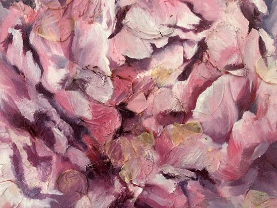
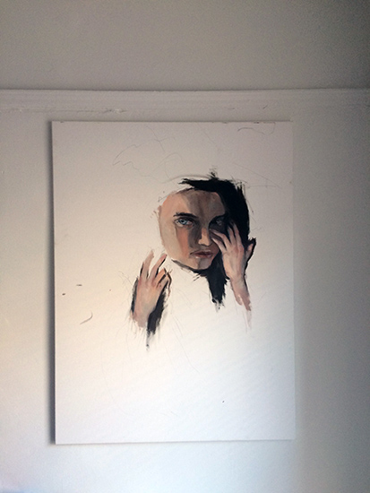

close-up of first image
well aren't you catchy | oil + slowly dying peony petals on canvas | 2015
i wanted to echo the characterizations of still life in Dutch paintings that captured states of life in full bloom and rot and the disintegration in between. the prolonging of life is a tricky subject. medicine brings out the "do whatever you can" tactic to "saving patients" (from death? from broken ribs and faulty hearts post-cpr?) peonies are funny in that they die very instantly for a plucked flower. layered on are petal upon paint upon petal upon paint and so forth. paint becomes a disguise of the decay(ing) underneath and is the blight of full reds, purples, and pinks that eternalize the image of the peony as a recognizable and pretty specimen.

unfin | oil on canvas | 2015-?
this painting lies in the forever unfinished state, perhaps to be re-altered and plotted over and over.
maybe it'll become a dinosaur. the possibilities are endless.